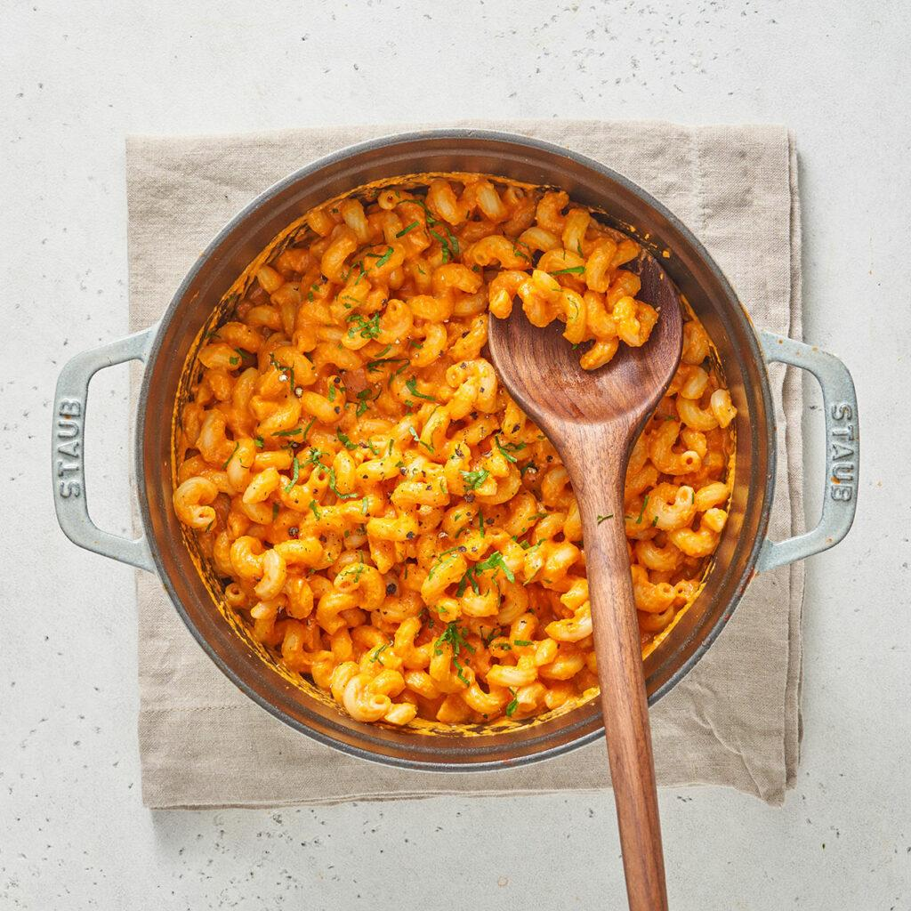
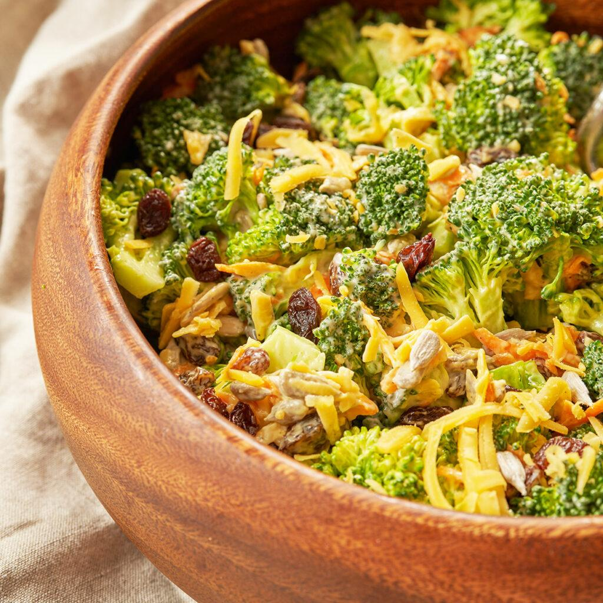

Your Lunch Recipe List in One Place
Easy Lunch Recipe You Have to Try
_____________________________________________________________________
(1)
Pink Pasta

⌛ CooK Time : 30min
Ingredients :
- 500 grams of dry pasta
- 1 chopped onion
- 2 coloves of minced garlic
- 800 grams of tomato sauce
- 3 tablespoons of olive oil
- ¾ cup cooking cream
- 25 grams of grated parmesan
- ½ tsp salt
- ½ tsp pepper
- 1 tsp crushed red pepper
lnstructions:
- In a medium, to large-sized pot heat the olive oil on medium heat,add the onions, and saute for about 5 min. until translucent.
- Add the minced garlic and sautee until fragrant, about 1 min.If you like this spicy feel free to add about 1 tsp chili flakes in with the the minced garlic.
- Add the tomato sauce, salt, and pepper bring to a boil then reduce to a simmer and allow to cook until thickened about 20-25 minutes.
- Meanwhile, generously salt a pot of water and bring it to a boil. Drop your pasta in and cook one minute less than al dente while you prepare the sauce. Preserve some of the pasta water.
- After the tomato sauce has thickened add between ¼- ½ cup of your pasta water to thin out the sauce a bit.Optional : our kids don't like the pieces of onion in the pasta sauce so at this point we use an immersion blender to make the sauce smooth.
- Add in your cooked pasta and allow it to warm through about 2-3 minutes.
- Remove from heat and add in your cream and parmesan cheese. Give it one last stir and serve. Enjoy!
(2)
Broccoli Salad Dressing

⌛ CooK Time : 15min
Ingredients :
- 650 grams broccoli 2 large heads of broccoli
- 1 carrot grated (on the large hole of grater)
- 100 grams cheddar cheese grated (on the large hole of grater) about 1 cup
- 70 grams raisins ½ cup
- 44 grams sunflower seeds ⅓ cup
- 250 grams mayonnaise 1¼ cup
- 3 tbsp apple cider vinegar
- 2 tbsp sugar
- ¼ tsp salt
- ¼ tsp pepper
Instructions :
- Whisk together the mayonnaise, vinegar, sugar, salt, and pepper until smooth and well incorporated. Place in fridge while we prepare the salad.
- Cut the broccoli heads into bite-size florets. Place broccoli in a colander and rinse under some cold water. Drain well then place on a clean kitchen towel to dry.
- Assemble the salad; add the broccoli florets, raisins, sunflower seeds, grated cheese, and grated carrots into a large serving bowl.
- Pour on half of the dressing and toss well. Then add the rest of your dressing and toss once more. Eat right away or place in the fridge for an hour or two before to chill before serving.